Accurate Incoherent Signal Measurement with RTSPU
Liang Ge, Verigy
Paper-ID: 12456 April 2010
Abstract
In Analog test, sometimes we meet the incoherent or uncertain frequency test condition. In this paper, we would like to introduce a DSP processing technique to make accurate incoherent signal measurements without compromising the frequency resolution and dynamic range (which is commonly occurs with traditional Windowing). This processing combined with phase/frequency detection, and up/down conversion and RTSPU's DDC & Filtering feature, allows the digitized signal show its original spectrum.
Key Words- RF, Mixed Signal, Incoherent, RTSPU
Introduction
In Analog test, measurement with CW signal is common to get SNR, THD, phase noise and other parameters. Normally we will design the test with coherent condition for better measurement. Coherent means that the captured points have just integer cycles of tone. For FFT, the capture point number is mostly the power of 2. To prevent the redundant capture of the same position in wave, the cycle number should be relative-prime with point number. So for a good coherent capture, user need to design the coherent condition, which sometimes not easy.
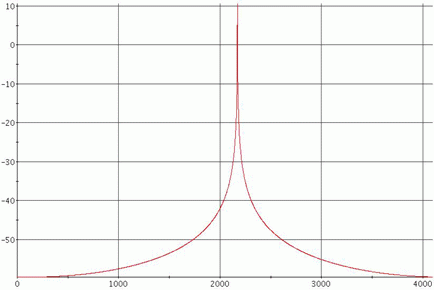
Figure 1. Incoherent Spectrum
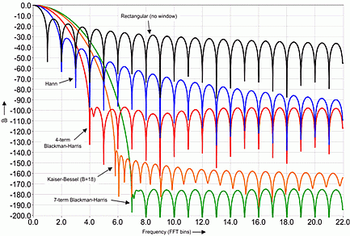
Figure 2. Window frequency solution and dynamic range
In some case, we may encounter problems such as a device limitation where it is hard to find the coherent measurement condition, or device output frequency is not certain, i.e. different for each time run. Then user must find a way to handle this. Otherwise, the spectrum leakage will probably override the noise and other signal to be measure, as shown in Figure1.
One traditional way to deal with incoherent case is to apply windowing. Windowing is a time domain weighting to suppress the spectrum leakage. But windowing also has its limitation. There is different kind of window with different features. When selecting window, users have to trade-off between frequency resolution and dynamic range (leakage) as in Figure 2.
For ordinary mixed signal test, the window method may be good enough. But for tough cases, such as phase noise or very small spur detecting, the windowing method often will not suffice.
In this paper, we would like to introduce a SW+HW DSP processing to make accurate incoherent signal measurement without compromising the frequency resolution and dynamic range.
Methodology
Frequency Conversion
To idea to get a clean spectrum of an incoherent tone is to shift the tone to an integer bin of FFT. If delta frequency between tone frequency and the nearest integer bin's frequency is Δf, then we shift the whole capture signal's frequency withΔf. This kind of moving is a down-conversion or up-conversion. Different from analog mixing, this up/down conversion here is uni-directional. With this technique, the full spectrum shape is kept. Mathematically, a moving in frequency domain is *e^jwt in time domain, as (1)
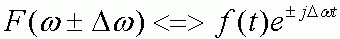
Formula (1)So the conversion equation is
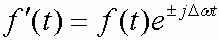
Formula (2)The FFT of the converted signal will be a clean spectrum because it is coherent. The figure showed the spectrum before and after conversion.
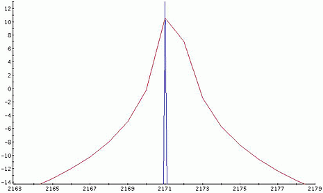
Figure 3. Zoomed Spectrum before and after conversion
As in Figure 3, the red spectrum is with original incoherent tone and the blue one is with converted tone.
Delta Frequency Identification
If the signal frequency is know, we can calculate the delta frequency to move. For example, the Fs = 1.024 Msps, Sample number is N=1024, signal frequency is Ft = 210.7 Khz we can calculate the nearest integer bin is int(Ft/(Fs/N)) = 211. Then, the delta frequency is +0.3 Khz.
When the signal frequency is not fixed, we must find a method to know how much frequency to move. Here we use the interpolation method [1]. This method can accurately estimate and incoherent tone's frequency.
First, we shall get the FFT spectrum of this signal with HANNING window. With the spectrum, we can calculate the delta frequency Δf as (3). In (3), R is the ratio of biggest bin and the 2nd biggest bin, as shown in Figure 4.
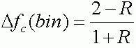
Formula (3)Now we have both the delta frequency to move and the method to convert the signal. Next we will introduce how RTSPU shall help user to do this in real task.
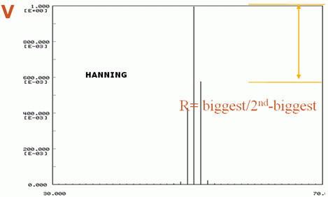
Figure 4. Interpolation method
Preprocessing with RTSPU
When with digitized signal, the signal is "real". Here the "Real" is mathematical concept, in contrast to Complex. Mathematically, the real signal will have symmetrical spectrum including the positive and negative band. When applying the above frequency conversion method, if we put positive tone to an integer bin, then the negative part will go to a non-integer bin. Its leakage will impact the positive band of signal, as in Figure 5
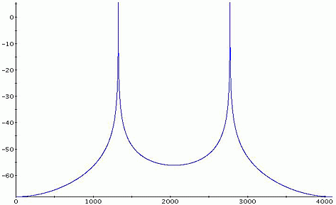
Figure 5 a. Real spectrum before conversion
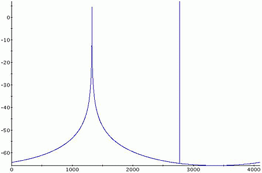
Figure 5 b. Real spectrum after conversion
To solve this problem, we will need to get rid of the negative band. The way to get rid of the negative band is filtering. The digital filtering (convolution) can take long time with workstation. But, V93000 has what is called RTSPU (Real Time Signal Process Unit) [2], which can fulfill this task without any test time penalty.
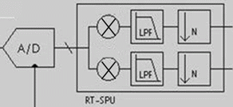
Figure 6. RTSPU
The RTSPU is as in Figure 6. It performs digital down conversion, filtering and decimation job. Now we can take advantage of its digital down conversion and filtering capability to remove the negative band. The RTSPU's signal processing is shown as in Figure 7
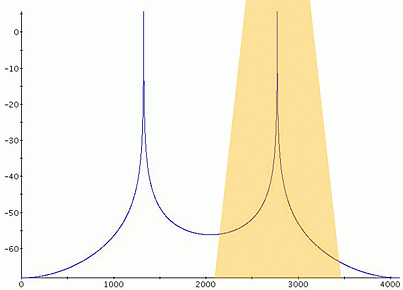
Figure 7. Signal processing before Conversion
After the RTSPU's processing, only positive band is remained. The spectrum after frequency moving will be clean.
With Port Scale RF
It is important is notes that when measure RF signal with V93000 Port Scale RF, the captured signal is by default processed by RTSPU. So with PSRF, users Do not need to manually make any setup. He just needs to calculate the delta frequency and make the up/down conversion.
Smartest Sample Code
In smartest, to make the ejwt, we shall make a complex array and take advantage of the Eula equation (4)
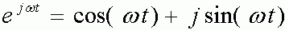
Formula (4)So the complex array's real part is generated with cos() function while its imaginary part is generated with sin() function.
The sample code of delta bin estimation and down/up conversion.
//-----------------------Freq Estimation: ------------------------
DOUBLE dMin=0.0, dMax=0.0, dR=0.0, dFx=0.0, dX=0.0;
INT iMin=0, iMax=0;
ARRAY_COMPLEX spect_C, ejwt, Result_wave;
ARRAY_D spect;
DSP_FFT(cData,spect_C,HANNING);
DSP_ABS_VEC(spect_C,spect);
DSP_MINMAX(spect,&dMin,&dMax,&iMin, &iMax);
if ( spect[iMax-1] > spect[iMax+1] )
{ dR=spect[iMax-1]/spect[iMax];
dFx=iMax+(1.0-2.0*dR)/(1.0+dR);
}
else
{ dR=spect[iMax+1]/spect[iMax];
dFx=iMax-(1.0-2.0*dR)/(1.0+dR);
}
dX=dFx-iMax; //delta freq bin
//---------------------Multiply with Ejwt-------------------------
ejwt.resize(Ni);
for(i=0; i<Ni; i++)
{ ejwt[i].real()=cos(-2*M_PI*dX*i/N);
ejwt[i].imag()=sin(-2*M_PI*dX*i/N);
}
DSP_MUL_VEC(cData, ejwt, Result_wave);
//Down conversionConclusion
In this paper, we introduced a hardware and software DSP processing to make accurate incoherent signal measurement without compromising the frequency resolution and dynamic range. This time-domain processing combining the phase/frequency detect, customized up/down conversion and the RTSPU's DDC + digital-filtering feature, making the digitized signal show its original spectrum. This method is also adaptive, allowing for 100% accurate measurement of frequency when the exact frequency is unknown. Thus, users Do not need to worry about the accuracy when coming across the incoherent or uncertain-frequency measurement case.
References
[1] "A Method of High Precision Frequency Detection with FFT," IEICE Transactions Vol. J 70-A No.5 pp798-805, May 1987
[2] V93000 User Guide